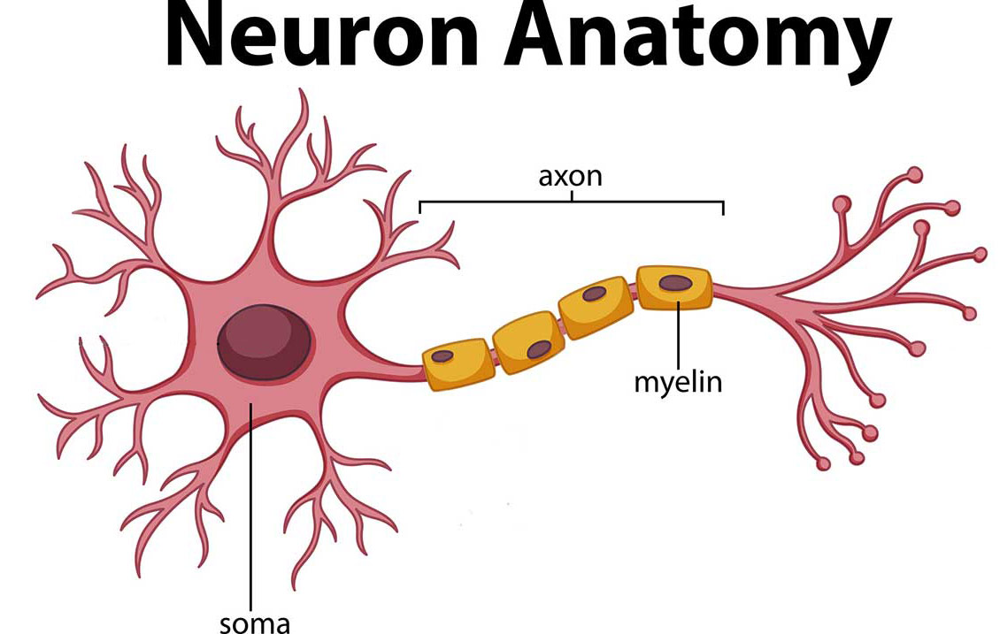

Jan 23rd, 2022 (jb tutorial)¶
Motivation: Here I will describe in detail how to organize your projects using jupyter books. I have also prepared a template that you can use as a starting point (download link below).
Installation¶
First we need to install a few things.
1) jupyer-book¶
pip installation
pip3 install -U jupyter-book
Or if you use anaconda:
conda install -c conda-forge jupyter-book
2) jupyter notebook¶
For this, you can just install JupyterLab which will eventually replace the classic jupyter notebook:
pip
pip3 install jupyterlab
anaconda:
conda install -c conda-forge jupyterlab
Making a book¶
Simply copy your notebook or markdown files into organized directories and run the following command:
jupyter-book build [dir]
Here [dir] is the book directory. This will become clear below.
Organizing the book¶
There are two yml files that you need to know about:
_toc.yml: Build a table of contents for the book._config.yml: Customize the book, title, logo, etc.
Check out the included template below to see how these work. In this example, I have two folders called nb for notebook and md for markdown updates. Whenever I make new progress, I usually add it to thenb folder, which is further organized by month.
Uploading to GitHub¶
Let’s now go over how to host the book on GitHub.
First, log in to GitHub, then go to “create a new repository”. In this example I named it
jb-template.Navigate to a directory where you want to store the book and clone the repo. For example:
cd ~/Dropbox/git/
git clone https://github.com/hadivafaii/jb-template.git
Unzip and copy the content of
template.zipinside the empty/jb-templatedirectory.Now we define aliases for building and pushing your book. Makes it a lot easier. Open
.bashrcusing your favorite text editor and add the two alias lines, save and close . Then reload.bashrcto apply these changes. Here are the steps:
nano ~/.bashrc
alias jb_build='jupyter-book build $HOME/Dropbox/git/jb-template/; rsync -ar $HOME/Dropbox/git/jb-template/_extras $HOME/Dropbox/git/jb-template/_build/html/'
alias jb_push='cd $HOME/Dropbox/git/jb-template; ghp-import -n -p -f _build/html'
source ~/.bashrc
That’s it! Now you can add new notebooks to the project and publish the updates which makes them available online. To do this, simply edit _toc.yml and add the notebook name there. Then run jb_build followed by jb_push to build and upload your book. After about 10-15 mins your book should be online. In this example, the URL is https://hadivafaii.github.io/jb-template
Uploading files¶
You might wonder why I have included a folder called _extras in the project. This is to store small files such as PDFs or other files that I might want to include in my reports. For example, I have uploaded a jpg image in _extras that I can embed in markdown using simple HTML code.
Code:
<img src="../../_extras/neuron.jpg" title="This is a Neuron" alt="null" width="350"/>
Result:

You can embed other file formats such as videos, GIFs, other HTML files and so on. It’s pretty awesome.
Hiding code¶
Sometimes we have a large chunk of code that reduces readability of the book. For instance:
import networkx as nx
from os.path import join as pjoin
from myterial import orange, blue_grey
from IPython.display import display, IFrame, HTML
from matplotlib.colors import rgb2hex, to_rgb
import matplotlib.pyplot as plt
import seaborn as sns
In the template, I have included another notebook called _tag.ipynb that you can use to hide code blocks. To do this, add a line # HIDE CODE on top of any cell that you want to hide and run _tag.ipynb.
For example, compare the two cells below. One of them has the # HIDE CODE tag, the other doesn’t. As a result, when I publish the book online you will see a little plus button that says “Click to show”. You can click on it reveal the code content of the hidden cell.
# HIDE CODE
# This cell will be hidden
import networkx as nx
from os.path import join as pjoin
from myterial import orange, blue_grey
from IPython.display import display, IFrame, HTML
from matplotlib.colors import rgb2hex, to_rgb
import matplotlib.pyplot as plt
import seaborn as sns
# This one will be visible
import networkx as nx
from os.path import join as pjoin
from myterial import orange, blue_grey
from IPython.display import display, IFrame, HTML
from matplotlib.colors import rgb2hex, to_rgb
import matplotlib.pyplot as plt
import seaborn as sns
Enjoy¶
Let me know if something doesn’t work or you have any questions.